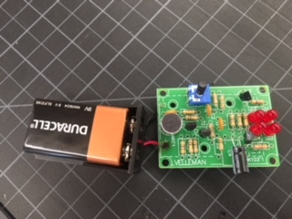

I learned that soldering is extremely hard, especially on small spaces, and that it should be done by an expert. It was way too hard to make sure that every wire was the right length and every bit of metal was soldered in the right place.
Despite these difficulties, I did manage to make one thing successfully.